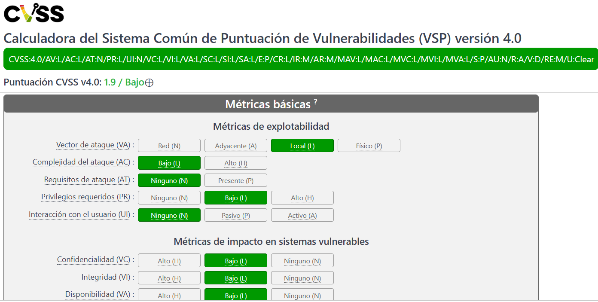

Procedimiento de Gestión de Vulnerabilidades y Parches
Código: P525-IT-1
Última revisión: 19/11/2026
Rev. N°: 2
Cumple: TISAX (VDA ISA 5.2.5), ISO 27001:2022 (A.8.8)
1 OBJETIVO
Describir los pasos para identificar, priorizar y tratar vulnerabilidades, aplicar y verificar parches y registrar excepciones según la MC525-IT-1 y el control 5.2.5 de TISAX. Unifica el P525-IT-2 Procedimiento de Aplicación de Parches.
2 INVENTARIO DE SISTEMAS
- Mantener el F525-IT-1 con cada sistema, su responsable de actualización, la fuente de avisos de seguridad, el método de actualización y cómo se detectan sus vulnerabilidades.
- Los programas de las PC se controlan en el F134-IT-1; al aprobar uno nuevo, definir quién lo actualiza.
- Al incorporar un sistema o un proveedor, agregarlo al F525-IT-1 antes de ponerlo en uso.
3 IDENTIFICACIÓN
| Actividad | Frecuencia | Responsable |
|---|---|---|
| Atender las alertas de vulnerabilidades críticas de Wazuh | Al recibirlas | Emiliano Ferrari |
| Revisar el tablero de vulnerabilidades de Wazuh (críticas y altas, por equipo y por programa) | Semanal | Emiliano Ferrari |
| Leer el boletín de seguridad de Microsoft (segundo martes de cada mes) y los avisos de proveedores | Mensual / al recibirlos | Emiliano Ferrari / Germán Montalbetti |
| Cargar los hallazgos del pentest externo | Al recibir el informe | Germán Montalbetti |
4 EVALUACIÓN Y PRIORIZACIÓN
- Tomar el CVSS que informa Wazuh o el NVD y ajustar la prioridad con la M525-IT-1: exposición a Internet, información confidencial, explotación activa (lista KEV de CISA), importancia del sistema.
- Definir el plazo según la MC525-IT-1 §7 (72 h, 7, 30 o 90 días, o próximo ciclo).
- Registrar en el F525-IT-2 las vulnerabilidades urgentes, críticas y altas una por una; las medias y bajas se agrupan por programa.
Calculadora y ejemplo de puntuación:

5 APLICACIÓN DE PARCHES
| Paso | Responsable | Registro |
|---|---|---|
| 1. Planificar: si afecta a servidores, SIP4.0 o firewall, registrar el cambio según P521-IT-1; avisar a los usuarios si hay reinicios o cortes | Emiliano Ferrari | F521-IT-2 |
| 2. Probar: grupo piloto de IT (2 días hábiles) para Windows y programas; snapshot o backup antes de servidores; staging para SIP4.0 | Emiliano Ferrari / Nicolás Donato | F525-IT-2 |
| 3. Instalar en el resto de los equipos dentro del plazo | Emiliano Ferrari | F525-IT-2 |
| 4. Verificar: la vulnerabilidad deja de figurar en Wazuh o la versión instalada es la corregida; revisar que los servicios funcionen | Emiliano Ferrari | F525-IT-2 |
| 5. Si el parche falla: volver atrás (desinstalar la actualización, restaurar el snapshot o la versión anterior) y registrar el problema | Emiliano Ferrari | F525-IT-2 · F162-IT-1 si hay incidente |
| 6. Cerrar la vulnerabilidad en el F525-IT-2 con fecha y evidencia | Emiliano Ferrari | F525-IT-2 |
Ciclo mensual de Windows
- Windows Update está en automático. Después del segundo martes, IT verifica que los equipos del grupo piloto instalaron el parche acumulativo y no tienen problemas.
- A los 7 días, IT revisa en Wazuh los equipos sin el parche del mes y pide al usuario que reinicie; si no lo hace en 2 días hábiles, IT reinicia el equipo.
- La gestión centralizada con Intune para los equipos de usuarios Business Premium está en evaluación (I525-IT-1, OBS-2026-12).
Vulnerabilidades urgentes (72 horas)
- Avisar al RSI; si no hay parche, aplicar una mitigación el mismo día (bloquear en el firewall, aislar el equipo, desinstalar el programa).
- Instalar el parche en todos los equipos afectados, aunque no haya terminado la prueba piloto completa, y verificar.
6 SISTEMAS ADMINISTRADOS POR PROVEEDORES
- Cada 6 meses, pedir por correo a Armanet (firmware del MikroTik y switches), Donweb (servidor de la App de Viajes) y Cubits SRL (aplicación) la versión instalada y las actualizaciones aplicadas; guardar la respuesta en el F525-IT-2.
- Ante una vulnerabilidad urgente publicada para esos sistemas, pedir la confirmación de la corrección dentro del plazo.
- Máquinas virtuales Linux de SIP4.0: verificar el modo de parcheo en Azure (parcheo automático de Azure o Azure Update Manager) y revisar cada mes las actualizaciones pendientes [Confirmar].
7 EXCEPCIONES Y RIESGO ACEPTADO
- Si una vulnerabilidad no se puede corregir en el plazo, registrar en el F525-IT-2: motivo, medidas de mitigación, nueva fecha y aprobación del RSI.
- Un riesgo aceptado se revisa como máximo cada 6 meses; los de sistemas sin soporte se informan a la Alta Dirección.
8 VERIFICACIÓN MENSUAL
- Exportar de Wazuh la cantidad de vulnerabilidades críticas y altas abiertas por sistema.
- Registrar en la hoja "Resumen mensual" del F525-IT-2: abiertas, corregidas en el mes, vencidas, excepciones vigentes y equipos sin el parche de Windows del mes.
- El RSI revisa y firma el resumen (V-03).
9 REGISTROS
| Registro | Retención |
|---|---|
| F525-IT-1 Inventario de Sistemas | Vigente y revisiones anteriores |
| F525-IT-2 Registro de Vulnerabilidades y Parches | 3 años |
| Respuestas de proveedores y exportaciones de Wazuh | 3 años |
El formulario F525-IT-3 Plantilla de Aceptación de Riesgo queda obsoleto (nunca se usó): las excepciones se registran en el F525-IT-2.
10 REVISIONES DEL DOCUMENTO
| Rev. N° | Fecha | Descripción |
|---|---|---|
| 0 | 25/8/2025 | Primera emisión del documento |
| 1 | 6/3/2026 | Revisión completa del documento |
| 2 | 19/11/2026 | Nuevo título; unifica el P525-IT-2 (aplicación de parches). Inventario F525-IT-1; identificación con Wazuh, boletín de Microsoft, proveedores y pentest; priorización con plazos únicos; aplicación de parches con prueba, verificación y vuelta atrás; ciclo mensual de Windows; urgencias de 72 h; proveedores; excepciones en el F525-IT-2; verificación mensual. Se quitan OpenVAS/Nessus, npm audit de la aplicación interna, auditorías trimestrales, réplica de pruebas, ventanas de mantenimiento no aplicadas, WSUS, Configuration Manager, Ansible, Satellite, ManageEngine, Ivanti, Azure Update Management, integración con STI, informes trimestrales y el F525-IT-3. |